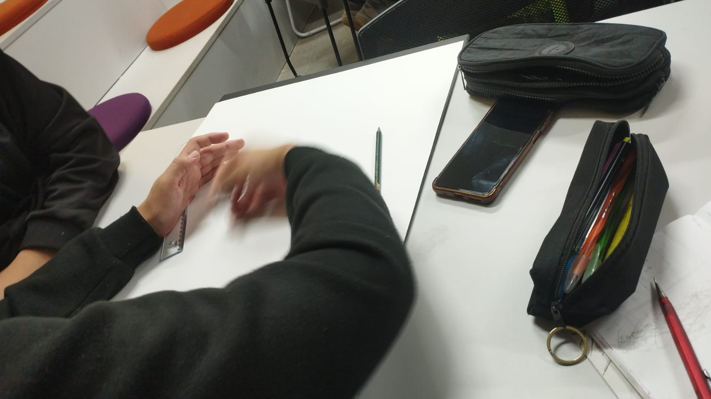

01
Materiais & Confecção
Para a criação das peças físicas e maquetes representativas, utilizamos matérias-primas que remetem à cultura artesanal, como argila, tintas naturais, madeira e fibras têxteis.

Conheça a trajetória de construção física e digital do projeto.
Para a criação das peças físicas e maquetes representativas, utilizamos matérias-primas que remetem à cultura artesanal, como argila, tintas naturais, madeira e fibras têxteis.
O desenvolvimento da plataforma digital foi estruturado com Figma para o protótipo de alta fidelidade, HTML5 semântico para acessibilidade, CSS3 customizado e Git/GitHub para versionamento do código.

Da pesquisa bibliográfica inicial sobre os povos originários até a montagem final da exposição, a equipe dividiu etapas entre documentação, testes de layout mobile e acabamento das obras.

Acompanhe todos os registros do processo de produção, desde os esboços até a arte final.


Aos professores orientadores, à ETEC e a todos que apoiaram a realização deste projeto cultural.